\l
# or
\list6 Data Management in Accounting
Learning Objectives of the Chapter
At the End of the Chapter, Students should be Able to -
Gain an understanding about data management and its importance
Understand the Concepts of Relational Database
Develop a database using a Database Management System (DBMS)
Connect Analytics Platforms Such as R or Python to the database and retrieve data
Gain an understanding about Online Analytical Processing (OLAP) DBMS
Create and Use OLAP DBMS
6.1 Data Management
Data management is the practice of collecting, keeping, and using data securely, efficiently, and cost-effectively. Data management is important for a variety of data-driven use cases including end-to-end business process execution, regulatory compliance, accurate analytics and AI, data migration, and digital transformation.
Managing digital data in an organization involves a broad range of tasks, policies, procedures, and practices. The work of data management has a wide scope, covering factors such as how to:
- Create, access, and update data across a diverse data tier
- Store data across multiple clouds and on premises
- Provide high availability and disaster recovery
- Use data in a growing variety of apps, analytics, and algorithms
- Ensure data privacy and security
- Archive and destroy data in accordance with retention schedules and compliance requirements
Data management systems are built on data management platforms and can include databases, data lakes and data warehouses, big data management systems, data analytics, and more.
6.2 Relational Database
Relational databases organize data into rows and columns, which form a table and different tables are connected to each other usign either primary key or foreign key. Here’s a simple example of two tables a small business might use to process orders for its products. The first table is a customer info table, so each record includes a customer’s name, address, shipping and billing information, phone number, and other contact information. Each bit of information (each attribute) is in its own column, and the database assigns a unique ID (a key) to each row. In the second table—a customer order table—each record includes the ID of the customer that placed the order, the product ordered, the quantity, the selected size and color, and so on—but not the customer’s name or contact information.
These two tables have only one thing in common: the ID column (the key). But because of that common column, the relational database can create a relationship between the two tables. Then, when the company’s order processing application submits an order to the database, the database can go to the customer order table, pull the correct information about the product order, and use the customer ID from that table to look up the customer’s billing and shipping information in the customer info table. The warehouse can then pull the correct product, the customer can receive timely delivery of the order, and the company can get paid.
6.3 Relational Database Management Systems (RDBMS)
While a relational database organizes data based off a relational data model, a relational database management system (RDBMS) is a more specific reference to the underlying database software that enables users to maintain it. These programs allow users to create, update, insert, or delete data in the system, and they provide:
- Data structure
- Multi-user access
- Privilege control
- Network access
Examples of popular RDBMS systems include MySQL, PostgreSQL, and IBM DB2. Additionally, a relational database system differs from a basic database management system (DBMS) in that it stores data in tables while a DBMS stores information as files.
6.4 Creating a Relational Database Using PostgreSQL
PostgreSQL is a widely used open-source Relational Database Management System (RDBMS). Since its release in 1996, PostgreSQL has carved a niche as one of the most robust and reliable database systems in the Tech industry. PostgreSQL is known for its rich feature set, reliability, scalability, and strong community support network.
6.4.1 Installing PostgreSQL
To install PostgreSQL locally on your computer, visit the installer by EDB, and download the newest version compatible with your operating system. To install PostgreSQL on Windows, you need to have administrator privileges. Below, we delineate the steps to install the PostgreSQL in windows.
Step 01: When the downloading is complete, double click the downloaded file and an installation wizard will appear and guide you through multiple steps. Click “Next” to specify directory.
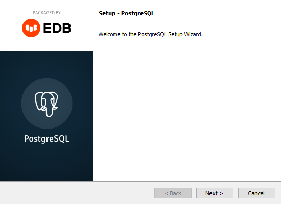
Step 02: You can specify the location of PostgreSQL, or go with the default choice
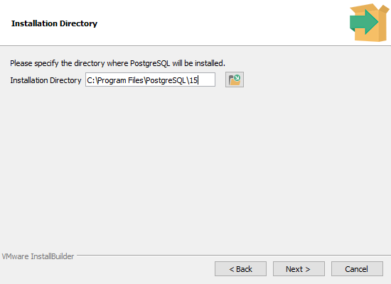
Step 03: To use PostgreSQL, you need to install PostgreSQL server. For our installation and uses purposes, we select the following servers - PostgreSQL Server, pgAdmin4, and Command Line Tools.
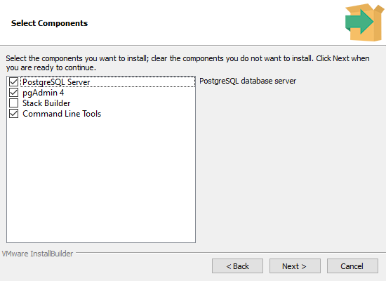
Step 04: Then, we need to choose the storage directory. Alternatively, we can go with the default directory.

Step 05: At this point, you need to choose your passowrd. It is important to note that the password will be used to connect to the database. Therefore, you must remember your password.

Step 06: Next you need to select the port. The default port number is 5432. If you change the port, you also need to remember the port number because like passowrd, you need to use the port number to connect to the database.
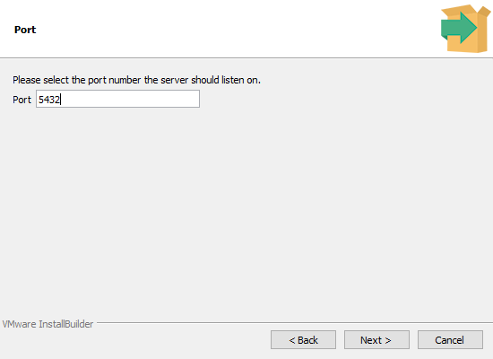
Step 07: We also need to select the geographical location of the database server. We can go with the default choice.

Then if everything looks ok, you can move forward by clicking ‘Next’. However, it is recommended that you copy and save the information from the “Pre Installation Summary” in some safe place so that you can access them in future, if necessary.
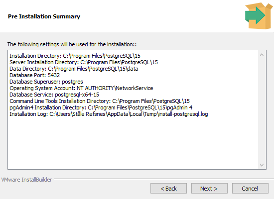
Step 08: Then you can click “Next” in ‘Ready to Install’ windows and the installation process will start and it will take a while to finish the installation. Once the installing is done, please click ‘Finish’ button on ‘Complete the PostgreSQL Setup Wizard’ window.
Tip
Some good sources to learn more about PostgreSQL -
6.5 Connecting to the Relational Database
In Section 6.4.1, we described the steps of installing PostgreSQL database; now, we will try to connect to that database. There are several ways to connect the database we created. These ways include -
- SQL Shell (psql)
- Command Shell (cmd)
- pgAdmin 4
Tip
To connect to PostgreSQL Database using pgAdmin 4, pleae use the following link -
6.5.1 Connection using SQL Shell (psql)
First, we will discuss SQL Shell (psql) method. Basically, SQL Shell (psql) is a terminal based program where you can write and execute SQL syntax in the command-line terminal. You will find the SQL Shell (psql) in the start menu under PostgreSQL. If you do not find it please search “psql” on windows search box.
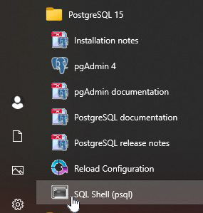
Once the program is open, you should be able to see a window like below. Usually, the name of the server is localhost as shown below; however, if you choose a different server while installing the PostgreSQL, you must mention your server name. Then, click “enter” on your keyboard.
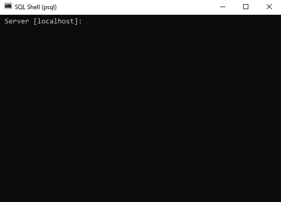
The default name of your database is postgres as shown below. If you choose a different name, please enter that name. Then, click “enter” on your keyboard.
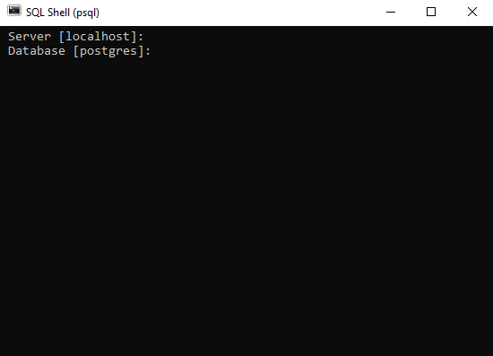
The default port number is 5432. If you use the default port number, then please click “enter” on your keyboard. Otherwise, use the port number that you used while installing PostgreSQL and click “enter” on your keyboard.
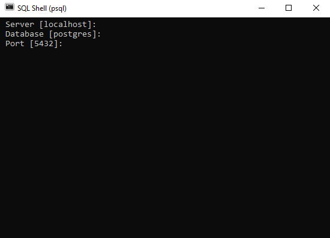
Similarly, the default user name is postgres. Please click “enter” on your keyboard if your default name is the same.
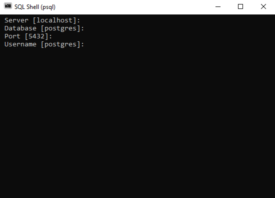
Next, you need to provide password that you set while installing the database.
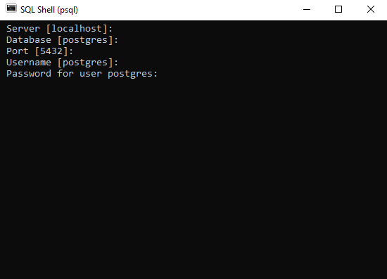
6.5.2 Connection using Command Shell (cmd)
To use the command prompt (cmd) to connect to PostgreSQL database, you need to use the following steps -
- Step # 01 - Open command prompt by writing
cmdin windows search bar as shown below. Then command prompt will open.
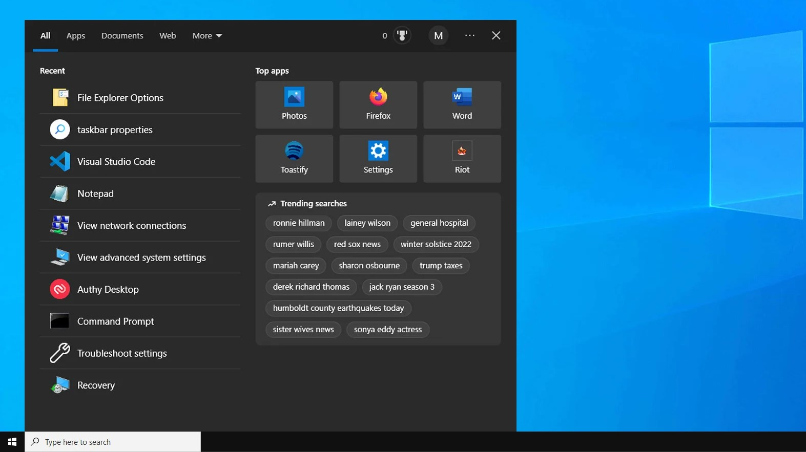
Step # 02 - type
cd C:\Program Files\PostgreSQL\16\binon the command prompt and hit enter on the keyboardStep # 03 - type
psql -h localhost -p 5432 -d postgres -U postgresStep # 04 - Now provide the password that you set while installing PostgreSQL
These steps should ensure that you are connected to the database.
6.6 Dealing with the Database
Once the database is created, new tables can be created. Also, different kinds of data manipulation can be performed. For example, after being connected to the database, one should check the database available by running the following code -
To connect to a database, one should run the following code -
\c name_of_the_database;To see all tables in a database, one should run the following code -
\dt;6.6.1 Creating a Database and Tables inside the Database
To create a database (e.g., my_database), one can run the following code -
CREATE DATABASE my_database;To create a table, following code can be run -
# we are going to create a table called - People
CREATE TABLE People (
pid int not null,
prefix text,
firstName text,
lastName text,
suffix text,
homeCity text,
DOB date,
primary key(pid)
);Similarly, four more tables are created by running the following code -
# Table - Customer
CREATE TABLE Customers (
pid int not null references People(pid),
paymentTerms text,
discountPct decimal(5,2),
primary key(pid)
);
# Table - Agent
CREATE TABLE Agents (
pid int not null references People(pid),
paymentTerms text,
commissionPct decimal(5,2),
primary key(pid)
);
# Table - Products
CREATE TABLE Products (
prodId char(3) not null,
name text,
city text,
qtyOnHand int,
priceUSD numeric(10,2),
primary key(prodId)
);
# Table - Orders
CREATE TABLE Orders (
orderNum int not null,
dateOrdered date not null,
custId int not null references Customers(pid),
agentId int not null references Agents(pid),
prodId char(3) not null references Products(prodId),
quantityOrdered integer,
totalUSD numeric(12,2),
primary key(orderNum)
);Next, we will populate the tables with different kinds of data.
# Inserting records into table - People
INSERT INTO People (pid, prefix, firstName, lastName, suffix, homeCity, DOB)
VALUES
(001, 'Dr.', 'Neil', 'Peart', 'Ph.D.', 'Toronto', '1952-09-12'),
(002, 'Ms.', 'Regina', 'Schock', NULL, 'Toronto', '1957-08-31'),
(003, 'Mr.', 'Bruce', 'Crump', 'Jr.', 'Jacksonville', '1957-07-17'),
(004, 'Mr.', 'Todd', 'Sucherman', NULL, 'Chicago', '1969-05-02'),
(005, 'Mr.', 'Bernard', 'Purdie', NULL, 'Teaneck', '1939-06-11'),
(006, 'Ms.', 'Demetra', 'Plakas', 'Esq.', 'Santa Monica', '1960-11-09'),
(007, 'Ms.', 'Terri Lyne', 'Carrington', NULL, 'Boston', '1965-08-04'),
(008, 'Dr.', 'Bill', 'Bruford', 'Ph.D.', 'Kent', '1949-05-17'),
(009, 'Mr.', 'Alan', 'White', 'III', 'Pelton', '1949-06-14')
;
# Inserting records into table - Customers
INSERT INTO Customers (pid, paymentTerms, discountPct)
VALUES
(001, 'Net 30' , 21.12),
(004, 'Net 15' , 4.04),
(005, 'In Advance', 5.50),
(007, 'On Receipt', 2.00),
(008, 'Net 30' , 10.00)
;
# Inserting records into table - Agents
INSERT INTO Agents (pid, paymentTerms, commissionPct)
VALUES
(002, 'Quarterly', 5.00),
(003, 'Annually', 10.00),
(005, 'Monthly', 2.00),
(006, 'Weekly', 1.00)
;
# Inserting records into table - Products
INSERT INTO Products( prodId, name, city, qtyOnHand, priceUSD )
VALUES
('p01', 'Heisenberg Compensator', 'Dallas', 47, 67.50),
('p02', 'Universal Translator', 'Newark', 2399, 5.50 ),
('p03', 'Commodore PET', 'Duluth', 1979, 65.02 ),
('p04', 'LCARS module', 'Duluth', 3, 47.00 ),
('p05', 'Remo drumhead', 'Dallas', 8675309, 16.61 ),
('p06', 'Trapper Keeper', 'Dallas', 1982, 2.00 ),
('p07', 'Flux Capacitor', 'Newark', 1007, 1.00 ),
('p08', 'HAL 9000 memory core', 'Newark', 200, 1.25 ),
('p09', 'Red Barchetta', 'Toronto', 1, 379000.47 )
;
# Inserting records into table - Orders
INSERT INTO Orders(orderNum, dateOrdered, custId, agentId, prodId, quantityOrdered, totalUSD)
VALUES
(1011, '2020-01-23', 001, 002, 'p01', 1100, 58568.40),
(1012, '2020-01-23', 004, 003, 'p03', 1200, 74871.83),
(1015, '2020-01-23', 005, 003, 'p05', 1000, 15696.45),
(1016, '2020-01-23', 008, 003, 'p01', 1000, 60750.00),
(1017, '2020-02-14', 001, 003, 'p03', 500, 25643.88),
(1018, '2020-02-14', 001, 003, 'p04', 600, 22244.16),
(1019, '2020-02-14', 001, 002, 'p02', 400, 1735.36),
(1020, '2020-02-14', 004, 005, 'p07', 600, 575.76),
(1021, '2020-02-14', 004, 005, 'p01', 1000, 64773.00),
(1022, '2020-03-15', 001, 003, 'p06', 450, 709.92),
(1023, '2020-03-15', 001, 002, 'p05', 500, 6550.984),
(1024, '2020-03-15', 005, 002, 'p01', 880, 56133.00),
(1025, '2020-04-01', 008, 003, 'p07', 888, 799.20),
(1026, '2020-05-01', 008, 005, 'p03', 808, 47282.54)
;6.6.2 Querying the Database
Once the database is created, we need to retrieve data from the database for which we need to write queries. For example, we want retireve prodid, name, and city from the table products. Then, we need to write the following query -
# SQL Query =
SELECT prodid, name, city FROM products;
# Output
prodid | name | city
--------+------------------------+---------
p01 | Heisenberg Compensator | Dallas
p02 | Universal Translator | Newark
p03 | Commodore PET | Duluth
p04 | LCARS module | Duluth
p05 | Remo drumhead | Dallas
p06 | Trapper Keeper | Dallas
p07 | Flux Capacitor | Newark
p08 | HAL 9000 memory core | Newark
p09 | Red Barchetta | Toronto
(9 rows)Similarly, if we want to collect all fields from products table for the city Dallas, then we can write the following queries -
# SQL Query =
SELECT * FROM products WHERE city = 'Dallas';
# Output
prodid | name | city | qtyonhand | priceusd
--------+------------------------+--------+-----------+----------
p01 | Heisenberg Compensator | Dallas | 47 | 67.50
p05 | Remo drumhead | Dallas | 8675309 | 16.61
p06 | Trapper Keeper | Dallas | 1982 | 2.00
(3 rows)6.6.3 Saving a Database from PostgreSQL
In order to share a database with stakeholders, we need to save the a particular database. Therefore, knowing how to save the database is very important. We must use the Command Prompt (cmd) to save a database. First, we need to open a command prompt following step # 01 in Section 6.5.2. Then we need to write the following codes on command prompt -
# First line of code and then hit enter on the Keyboard
cd ..
# Second line of code and then hit enter on the Keyboard
cd ..
# Third line of code and then hit enter on the Keyboard
cd \Program Files\PostgreSQL\16\bin
# Fourth line of code and then hit enter on the Keyboard
pg_dump -h localhost -d name_of_your_database -U postgres -p 5433 -F tar >K:\name_of_your_database.tar
# Fifth Line of code - provide your password
Tip
You can watch the youtube video to learn more about how to save a database from PostgreSQL - https://www.youtube.com/watch?v=sa5VXDG_aW8
In the fourth line of code above - pg_dump -h localhost -d name_of_your_database -U postgres -p 5433 -F tar >K:\name_of_your_database.tar- the “name_of_your_database” is the database name that you want to save to share and “K:\\” is the directory (folder) address (path) on which you want to save your database and “name_of_your_database” is the name of the database that you would like to assign to the saved database and “.tar” is the file extension. It is important to note that when you run the fourth line of code above, it might show the message - “Access is denied”. In such situation, you should change the path (address) of the directory in which you would like to save the database.
6.6.4 Uploading a Database to PostgreSQL
Sometimes, you might need to upload a database to PostgreSQL. Therefore, you should know how you can upload the database to PostgreSQL. First, you should create a database following the process as described in Section 6.6.1. For example, we create a database called my_database in PostgreSQL. Assume that the database that we want to upload to PostgreSQL is in the path - K:\ and the name of the database is my_database_upload. Therefore, the complete path of the database to be uploaded is - “K:\my_database_upload.tar”. Then, you should open a command prompt as described in Section 6.5.2. Then run the following code -
# First line of code and then hit enter on the Keyboard
cd ..
# Second line of code and then hit enter on the Keyboard
cd ..
# Third line of code and then hit enter on the Keyboard
cd \Program Files\PostgreSQL\16\bin
# Fourth line of code and then hit enter on the Keyboard
pg_restore -h localhost -p 5433 -d my_database -U postgres -v "K:\my_database_upload.tar"
# Fifth Line of code - provide your password In the fourth line of code above - pg_restore -h localhost -p 5433 -d my_database -U postgres -v "K:\my_database_upload.tar"- “my_database” is the name of the database that you created on the PostgreSQL and “K:\my_database_upload.tar” is the path of the database to be uploaded.
Once you upload the database to the PostgreSQL , you can check whether the database is uploaded by following Section 6.6.
6.7 Querying PostgreSQL Database Using R
# Importing Necessary Packages
library(DBI)
library(RPostgres)
library(tidyverse)# Connecting to PostgreSQL Database
con = dbConnect(RPostgres::Postgres()
, host='localhost'
, port='5433'
, dbname='my_database',
, user='postgres'
, password="YourPassword")# Checking all Tables in the Database
dbListTables(con)[1] "agents" "customers" "orders" "people" "products" # To see a table
con %>%
tbl ('orders') # Source: table<"orders"> [?? x 7]
# Database: postgres [postgres@localhost:5433/my_database]
ordernum dateordered custid agentid prodid quantityordered totalusd
<int> <date> <int> <int> <chr> <int> <dbl>
1 1011 2020-01-23 1 2 p01 1100 58568.
2 1012 2020-01-23 4 3 p03 1200 74872.
3 1015 2020-01-23 5 3 p05 1000 15696.
4 1016 2020-01-23 8 3 p01 1000 60750
5 1017 2020-02-14 1 3 p03 500 25644.
6 1018 2020-02-14 1 3 p04 600 22244.
7 1019 2020-02-14 1 2 p02 400 1735.
8 1020 2020-02-14 4 5 p07 600 576.
9 1021 2020-02-14 4 5 p01 1000 64773
10 1022 2020-03-15 1 3 p06 450 710.
# ℹ more rowscon %>%
tbl ('orders') %>%
collect ()# A tibble: 14 × 7
ordernum dateordered custid agentid prodid quantityordered totalusd
<int> <date> <int> <int> <chr> <int> <dbl>
1 1011 2020-01-23 1 2 p01 1100 58568.
2 1012 2020-01-23 4 3 p03 1200 74872.
3 1015 2020-01-23 5 3 p05 1000 15696.
4 1016 2020-01-23 8 3 p01 1000 60750
5 1017 2020-02-14 1 3 p03 500 25644.
6 1018 2020-02-14 1 3 p04 600 22244.
7 1019 2020-02-14 1 2 p02 400 1735.
8 1020 2020-02-14 4 5 p07 600 576.
9 1021 2020-02-14 4 5 p01 1000 64773
10 1022 2020-03-15 1 3 p06 450 710.
11 1023 2020-03-15 1 2 p05 500 6551.
12 1024 2020-03-15 5 2 p01 880 56133
13 1025 2020-04-01 8 3 p07 888 799.
14 1026 2020-05-01 8 5 p03 808 47283.# Selecting some columns
con %>%
tbl ('orders') %>%
select (ordernum, dateordered, custid, agentid)# Source: SQL [?? x 4]
# Database: postgres [postgres@localhost:5433/my_database]
ordernum dateordered custid agentid
<int> <date> <int> <int>
1 1011 2020-01-23 1 2
2 1012 2020-01-23 4 3
3 1015 2020-01-23 5 3
4 1016 2020-01-23 8 3
5 1017 2020-02-14 1 3
6 1018 2020-02-14 1 3
7 1019 2020-02-14 1 2
8 1020 2020-02-14 4 5
9 1021 2020-02-14 4 5
10 1022 2020-03-15 1 3
# ℹ more rows# Filtering some rows
con %>%
tbl ('products') %>%
filter (city == "Dallas")# Source: SQL [3 x 5]
# Database: postgres [postgres@localhost:5433/my_database]
prodid name city qtyonhand priceusd
<chr> <chr> <chr> <int> <dbl>
1 p01 Heisenberg Compensator Dallas 47 67.5
2 p05 Remo drumhead Dallas 8675309 16.6
3 p06 Trapper Keeper Dallas 1982 2 # showing the SQL query
con %>%
tbl ('products') %>%
filter (city == "Dallas") %>%
show_query()<SQL>
SELECT "products".*
FROM "products"
WHERE ("city" = 'Dallas')# Disconnecting the database
con %>% dbDisconnect ()6.8 Querying PostgreSQL Database Using Python
# Importing Necessary Python Packages
import ibis# To know more about the next line of code
# see - https://ibis-project.org/tutorials/ibis-for-dplyr-users
ibis.options.interactive = True# to connect to the database
conn = ibis.postgres.connect(
user='postgres',
password = 'Plethora20046029!',
host = "localhost",
port = 5433,
database = "dvdrental"
)# See all tables in a database
conn.list_tables()['actor', 'actor_info', 'address', 'category', 'city', 'country', 'customer', 'customer_list', 'ff48_df', 'film', 'film_actor', 'film_category', 'film_list', 'inventory', 'language', 'nicer_but_slower_film_list', 'payment', 'rental', 'sales_by_film_category', 'sales_by_store', 'staff', 'staff_list', 'store']# To know the total number of rows
conn.table('actor').count() # total rows conn.table('actor').columns # name of the columns ['actor_id', 'first_name', 'last_name', 'last_update']# To see the SQL command
conn.table('actor').compile()'SELECT * FROM "actor"'# Dealing with a table
conn.table('country')┌────────────┬────────────────┬─────────────────────┐
│ country_id │ country │ last_update │
├────────────┼────────────────┼─────────────────────┤
│ !int32 │ !string │ !timestamp(6) │
├────────────┼────────────────┼─────────────────────┤
│ 1 │ Afghanistan │ 2006-02-15 09:44:00 │
│ 2 │ Algeria │ 2006-02-15 09:44:00 │
│ 3 │ American Samoa │ 2006-02-15 09:44:00 │
│ 4 │ Angola │ 2006-02-15 09:44:00 │
│ 5 │ Anguilla │ 2006-02-15 09:44:00 │
│ 6 │ Argentina │ 2006-02-15 09:44:00 │
│ 7 │ Armenia │ 2006-02-15 09:44:00 │
│ 8 │ Australia │ 2006-02-15 09:44:00 │
│ 9 │ Austria │ 2006-02-15 09:44:00 │
│ 10 │ Azerbaijan │ 2006-02-15 09:44:00 │
│ … │ … │ … │
└────────────┴────────────────┴─────────────────────┘conn.table('country').head(5).execute() country_id country last_update
0 1 Afghanistan 2006-02-15 09:44:00
1 2 Algeria 2006-02-15 09:44:00
2 3 American Samoa 2006-02-15 09:44:00
3 4 Angola 2006-02-15 09:44:00
4 5 Anguilla 2006-02-15 09:44:00## describe () or columns () equivalent to glimpse ()
conn.table('country').describe<bound method Table.describe of ┌────────────┬────────────────┬─────────────────────┐
│ country_id │ country │ last_update │
├────────────┼────────────────┼─────────────────────┤
│ !int32 │ !string │ !timestamp(6) │
├────────────┼────────────────┼─────────────────────┤
│ 1 │ Afghanistan │ 2006-02-15 09:44:00 │
│ 2 │ Algeria │ 2006-02-15 09:44:00 │
│ 3 │ American Samoa │ 2006-02-15 09:44:00 │
│ 4 │ Angola │ 2006-02-15 09:44:00 │
│ 5 │ Anguilla │ 2006-02-15 09:44:00 │
│ 6 │ Argentina │ 2006-02-15 09:44:00 │
│ 7 │ Armenia │ 2006-02-15 09:44:00 │
│ 8 │ Australia │ 2006-02-15 09:44:00 │
│ 9 │ Austria │ 2006-02-15 09:44:00 │
│ 10 │ Azerbaijan │ 2006-02-15 09:44:00 │
│ … │ … │ … │
└────────────┴────────────────┴─────────────────────┘># filtering rows
conn.table('country')[conn.table('country')['country']=="Zambia"] \
.execute() country_id country last_update
0 109 Zambia 2006-02-15 09:44:00# Selecting Columns
conn.table('country')[["country_id", "country"]]┌────────────┬────────────────┐
│ country_id │ country │
├────────────┼────────────────┤
│ !int32 │ !string │
├────────────┼────────────────┤
│ 1 │ Afghanistan │
│ 2 │ Algeria │
│ 3 │ American Samoa │
│ 4 │ Angola │
│ 5 │ Anguilla │
│ 6 │ Argentina │
│ 7 │ Armenia │
│ 8 │ Australia │
│ 9 │ Austria │
│ 10 │ Azerbaijan │
│ … │ … │
└────────────┴────────────────┘# Arrange
conn.table('rental') \
.order_by(['inventory_id'])┌───────────┬─────────────────────┬──────────────┬─────────────┬───┐
│ rental_id │ rental_date │ inventory_id │ customer_id │ … │
├───────────┼─────────────────────┼──────────────┼─────────────┼───┤
│ !int32 │ !timestamp(6) │ !int32 │ !int16 │ … │
├───────────┼─────────────────────┼──────────────┼─────────────┼───┤
│ 4863 │ 2005-07-08 19:03:15 │ 1 │ 431 │ … │
│ 11433 │ 2005-08-02 20:13:10 │ 1 │ 518 │ … │
│ 14714 │ 2005-08-21 21:27:43 │ 1 │ 279 │ … │
│ 972 │ 2005-05-30 20:21:07 │ 2 │ 411 │ … │
│ 2117 │ 2005-06-17 20:24:00 │ 2 │ 170 │ … │
│ 4187 │ 2005-07-07 10:41:31 │ 2 │ 161 │ … │
│ 9449 │ 2005-07-30 22:02:34 │ 2 │ 581 │ … │
│ 15453 │ 2005-08-23 01:01:01 │ 2 │ 359 │ … │
│ 10126 │ 2005-07-31 21:36:07 │ 3 │ 39 │ … │
│ 15421 │ 2005-08-22 23:56:37 │ 3 │ 541 │ … │
│ … │ … │ … │ … │ … │
└───────────┴─────────────────────┴──────────────┴─────────────┴───┘# Group By
conn.table('payment')[['payment_id', 'customer_id', 'staff_id', 'amount']] \
.execute() \
.groupby('customer_id').agg({'amount': 'mean'}) \
.reset_index() customer_id amount
0 1 3.823333
1 2 4.759231
2 3 5.448333
3 4 3.717273
4 5 3.847143
.. ... ...
594 595 3.817586
595 596 3.353636
596 597 3.816087
597 598 3.808182
598 599 4.378889
[599 rows x 2 columns]# To disconnect the database
conn.disconnect()